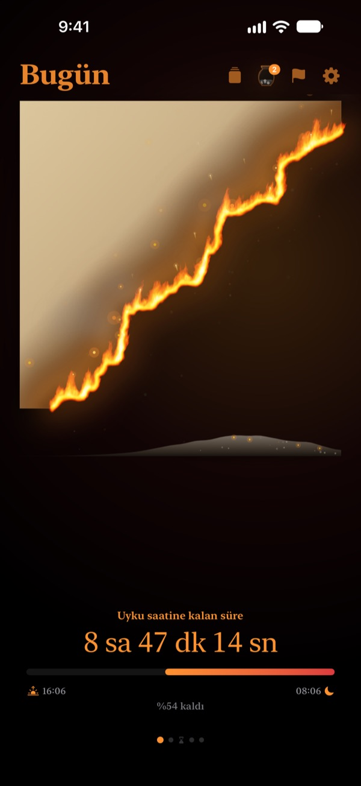
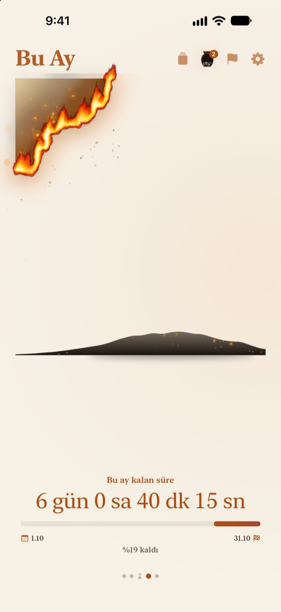
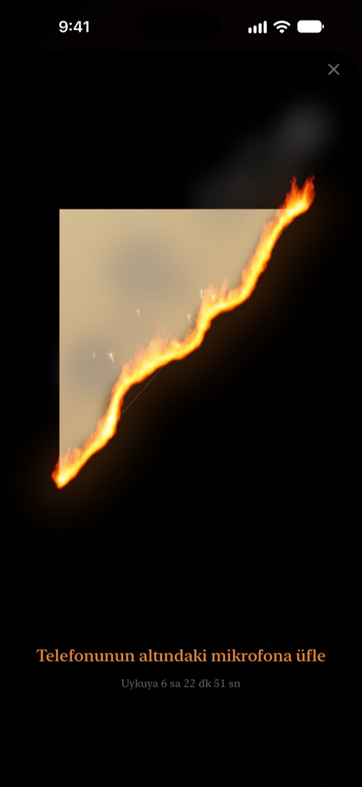
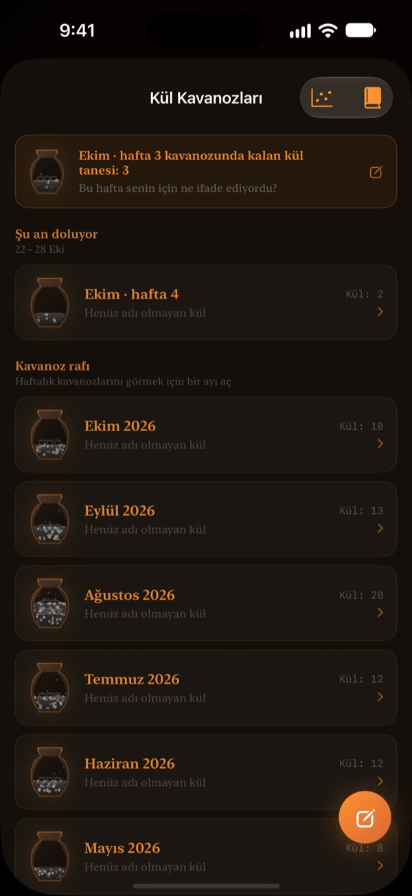

Bugünden kalan zaman
gözünün önünde yanıyor
Rakamla bakınca masum görünen bir akşam, alev alan bir parşömen olunca bambaşka görünür. Yatmadan yarım saat önce ekrana üfle, ateşi söndür ve günü kapat.
Yanan parşömen, üfleyerek söndürme ve değerlendirmeler ücretsiz.

Üfleyip söndürmeyi dene
Saati yatmadan hemen önceye getir, sonra düğmeyi basılı tut ya da mikrofona üfle.
"Saat ne ara on iki oldu?" dediğin oldu mu?
Akşam yemeğini yersin, biraz oturursun ve gün biter. Saatteki rakamlar her akşam aynı göründüğü için zamanın azaldığını hissetmezsin. Yanan Parşömen kalan zamanı yanıp biten bir parşömen olarak gösterir, akşam kaybolmadan fark edersin.
Günün, haftan ve yılın yanıyor
Uyandığın andan yatma saatine kadar parşömen yavaş yavaş yanar. Bu hafta, bu ay ve bu yıldan ne kaldığını da aynı şekilde görürsün.
Tarihi olan bir hedefi son tarih olarak ekle, geri sayımı da yanında akar.

Günü bir üflemeyle kapat
Yatmadan 30 dakika önce yanan parşömene üfleyip ateşi söndürebilirsin. Yalnızca nefesinin gücü kullanılır, hiçbir şey kaydedilmez.
Geriye kalan parça saklanır. Çevirip arkasına bugünle ilgili bir satır yazabilirsin.

Geçen zaman kül olarak kalır
Günü tek satırlık bir değerlendirmeyle düşün ve zamanı nasıl kullandığına göre iki eksenli bir grafiğe nokta olarak koy. Değerlendirmeler haftalık ve aylık Kül Kavanozlarında birikir, Değerlendirme Kitabı'nda yeniden okunur.
Külün Akışı, zamanının nereye gittiğini dağılım grafiği ve köz takvimiyle gösterir.

Üç adımda başla
- 1
Kalkış ve yatış saatini ayarla
Sağ üstteki dişliye dokun. Parşömen bu saatlere göre tutuşur ve söner.
- 2
Dönemi seç
Gün, hafta, ay ve yıl arasında kaydır ya da gerekmeyen sayfaları Ayarlar'dan gizle.
- 3
Widget ekle
Ana ekranda ya da kilitli ekranda kalan zamanı uygulamayı açmadan görürsün.
Kalan zamanı nerede görürsün
- Gün
- Uyandığın andan yatma saatine kadar
- Hafta · Ay · Yıl
- Bu hafta, bu ay ve bu yıldan kalan
- Boş zaman
- Haftanın parşömeni yalnızca kendine ayırdığın saatlerde yanar (Pro)
- Son Tarihler
- Bir hedefin tarihine kalan süre. Biri ücretsiz
- Ana ekran widget'ları
- Günlük parşömen küçük, orta ve büyük. Hafta, ay, yıl ve son tarihler küçük ve orta
- Kilitli ekran widget'ları
- Yuvarlak, dikdörtgen ve tek satır
- Dynamic Island · Canlı Etkinlik
- Yatmadan bir saat önceden ya da gün boyu. Ayarlar'dan seç ya da kapat
Yanan parşömeni tam geri sayımla görmek için Dynamic Island'ı genişlet.
Parşömen ücretsiz. Pro daha fazlasını saklar.
Ücretsiz
- Gün, hafta, ay ve yıl parşömenleri
- Alevi üfleyip söndürme ve parça biriktirme
- Tek satırlık değerlendirmeler, Kül Kavanozları ve Değerlendirme Kitabı
- Sabah kontrolü, istersen Sağlık uygulamasındaki uyku verisiyle
- Ana ekran ve kilitli ekran widget'ları, Dynamic Island
- Bir son tarih
Yanan Parşömen Pro
- Yalnızca kendi boş zamanını yak
- Temalar: Ay Işığı Hanji, Seladon, Alacakaranlık
- Alevler: Bozkır yangını, Köz, Maytap
- Parçaları kart ve poster olarak paylaş
- Değerlendirme Kitabı'nı PDF olarak dışa aktar
- On iki aylık Külün Akışı
- Sınırsız son tarih
Abonelik değil. Bir kez al, ömür boyu kullan; sonradan gelecek tüm Pro özellikleri de dahil.
Yeni cihaz mı? Ayarlar'da Satın Alımları Geri Yükle'ye dokun.
Sık sorulan sorular
Widget, uygulamadan farklı bir saat gösteriyor.
iOS ana ekran widget'larını her saniye yeniden çizmez. Uygulamayı açınca hemen eşitlenir. Saniye saniye ilerleyen geri sayım için Dynamic Island'a ve kilitli ekrandaki Canlı Etkinlik'e bak.
Üflüyorum ama ateş sönmüyor.
Söndürme yalnızca yatmadan 30 dakika önce açılır. Mikrofon erişimine izin verdiğini kontrol et ve iPhone'un altındaki mikrofona yakın, yaklaşık bir saniye düzgünce üfle. Kısa bir ses yetmez.
Sesim kaydediliyor mu?
Hayır. Yalnızca üflemenin gücü ölçülür. Hiçbir ses kaydedilmez ya da saklanmaz.
Uyurken ne görünüyor?
Yatma saati geçince yanan bir kalp belirir ve uyanana kadar gecenin ne kadarının geçtiğini gösterir. Sabah uygulama dün gece zamanında yatıp yatmadığını sorar; geç kaldıysan bu sabahın parşömeni o kadar kavrulmuş başlar. Sağlık uygulamasına bağlarsan sormadan kayıtlı uykuya dalma saatini kullanır.
Bildirimler ne zaman gelir?
Yatmadan bir saat önce. Gelmiyorsa Ayarlar > Bildirimler > Yanan Parşömen'i kontrol et.
Çok pil harcar mı?
Uygulama içindeki geri sayım her saniye değişir, ama widget'lar iOS tarafından tasarruflu şekilde güncellenir, etkisi küçüktür.
Verilerim nerede saklanıyor?
Kalkış ve yatış saatleri, son tarihler, değerlendirmeler ve kavanozlar yalnızca cihazında kalır. Geliştiriciye yalnızca anonim kullanım istatistikleri, çökme tanılamaları ve senin gönderdiğin geri bildirimler ulaşır. Reklam yok, takip yok.
Pro abonelik mi?
Hayır. Bir kez ödersin, sonsuza dek senindir. Yeni cihazda Ayarlar'da Satın Alımları Geri Yükle'ye dokun.
Hata, fikir ya da başka bir soru için leeo@kakao.com adresine yaz.